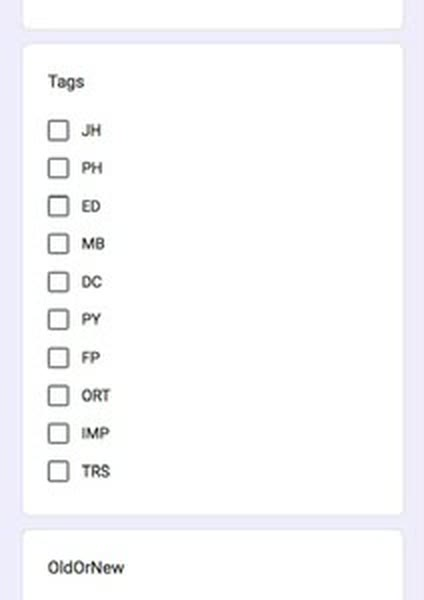
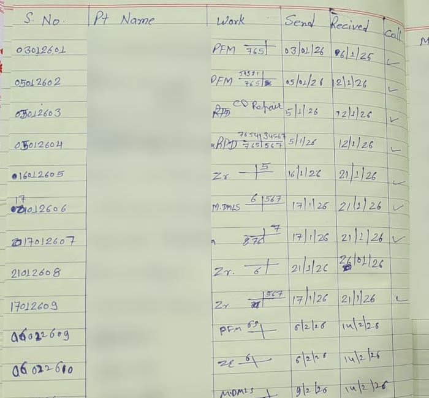
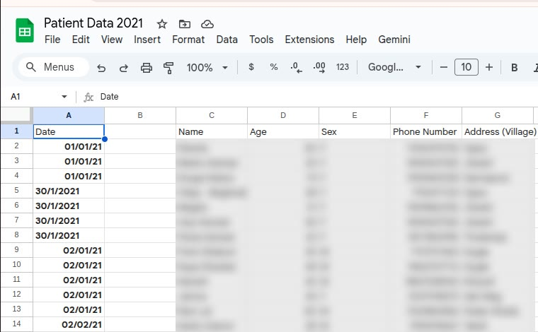
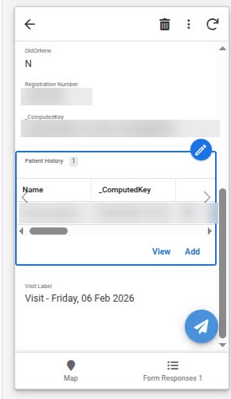
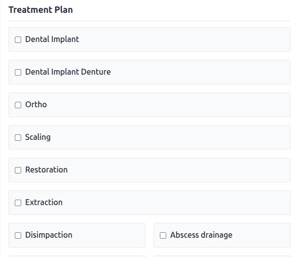
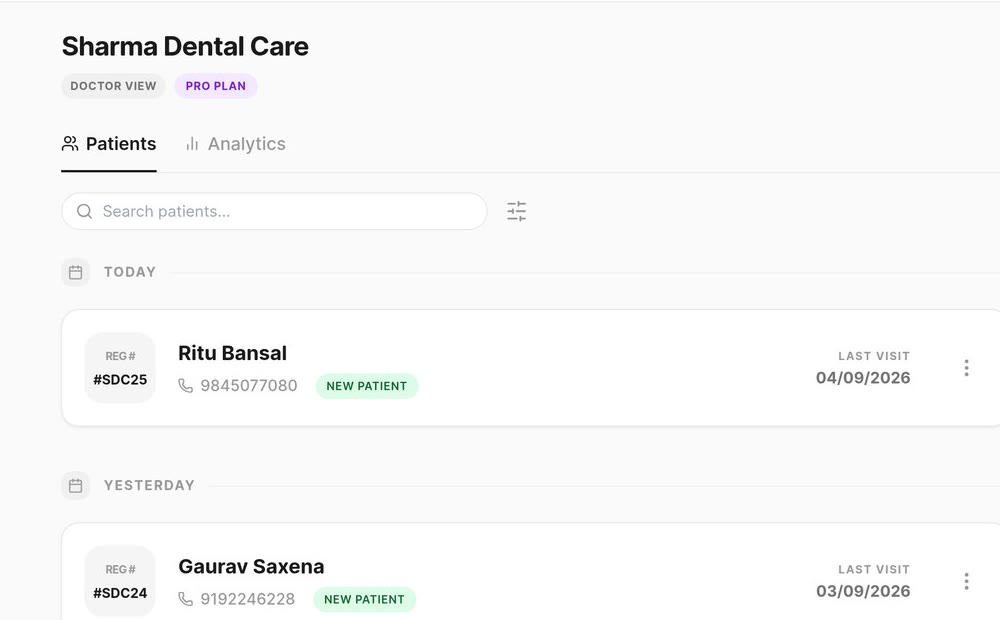
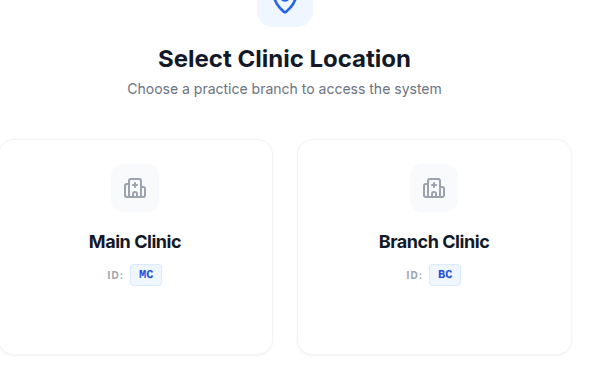

Paper registers lose patients.
Most private dental clinics in India still record every visit in a paper register. Clinics that have gone digital usually keep an Excel sheet. Neither is a secure medical record, and both end the same way: the pages fill up, the register goes on a shelf, and nobody opens it again.
So nobody calls the patient back. A patient who needed a follow-up, a second sitting or a six-month cleaning simply does not return, and for a dental clinic the returning patient is where most of the revenue is.
Why clinics stay on paper.
I started with a dentist I worked with: their register, their staff and their day at the chair. Then I ran demo calls with clinics that had already paid for software. Digital tools exist. Dentists don't use them for four reasons.
A patient is waiting. Any tool that takes longer than writing in the register is dropped within days.
Records are kept by front-desk staff, and most of them have never used practice software.
One dentist was paying ₹70,000 a year for Practo to run two clinics, on software built for general physicians.
No clinic starts from zero. Old registers and sheets have to come along, or the new tool is never adopted.
 123
123- 1A Call column, ticked by hand. Clinics already try to recall patients, when someone remembers.
- 2Lab work is sent and received on the same page as the patient.
- 3Crowns and dentures carry 7 to 10 year warranties that someone has to track.

45- 4One form served two clinics, Jhadol and Phalasia, told apart by a tag.
- 5Treatments squeezed into codes like ED, MB and ORT that only the staff understood.
Six workarounds. None does all three.
A clinic needs secure patient records, WhatsApp, because that is where Indian patients actually reply, and software made for dental work. Every option on the market covers one of the three at most.
| Patient records | Made for dentists | Cost to the clinic | ||
|---|---|---|---|---|
| Paper register | lost when full | ₹0 | ||
| Excel sheet | not a medical record | ₹0 | ||
| Personal WhatsApp | number gets banned | ₹0 | ||
| WATI, AiSensy | ₹1,500–3,200 a month | |||
| Practo Ray | SMS only | made for physicians | ₹70,000 a year, 2 clinics | |
| Foreign dental EMRs | dated | Varies | ||
| Dentomate | no API to buy | No extra cost per clinic |
Three tries before the app.
It started with one dentist's paper register. Before writing an app, we tried the cheapest tools available. Each one failed for a reason that ended up shaping Dentomate.





Built for the chair, the desk and the patient's phone.
Each part of the app answers one of the findings. The screens below are the shipped product.
Under a minute at the chair
Treatments are grouped the way dentists think about them: general, endodontics, surgery, prostho and ortho. The dentist taps, ticks the details and moves on. We tested it with dentists until a full patient entry took less than a minute.
- 1Tap a tag to add a treatment
- 2Tick the details, done
- Treatment tabs
- Quick tags
- Medical history
- Doctor-only notes
 12
12The prescription reaches WhatsApp
As the patient leaves, a PDF with the clinic's branding and the doctor's name goes to their WhatsApp, with care advice in the message. If they reply, the front desk answers from the same screen.
- 1Prescription attached, care advice included
- 2WhatsApp's reply window, counting down
- Clinic branding
- Doctor's name
- 1-0-1 dosage
- Hindi and English
 12
12Recall everyone due in one click
Patients who are due for a visit are tagged in the list. The front desk selects them, sends one campaign, and sees Sent, Delivered and Read against every name. No API subscription, no developer.
- 1Select who is due, send once
- 2Sent, Delivered, Read on every patient
- Due for visit
- 7, 90, 180-day recalls
- Hindi and English
- One shared API
 12
12Nudges to grow the practice
The dashboard goes past revenue. It shows which treatments earn the most, which patients carry medical risk, and whether new patients are coming back, then points the clinic at who to reach next.
- 1Insights flag the patients who need attention
- 2New and returning patients, side by side
- Treatment value mix
- Medical risk profile
- Patient demographics
- New vs returning
Every clinic under one account
Many dentists run more than one clinic. Dentomate keeps every branch under one account at no extra cost, and old registers and sheets can be imported, so no clinic starts from zero.
- 1Pick the branch when the day starts
- Multiple branches
- No extra cost per clinic
- Import old records
- Doctor and staff roles

1On whatever device is at hand
It is a web app, so there is nothing to install. The doctor uses it on a phone at the chair, the front desk on a desktop, and both see the same records.
- No install
- Phone, tablet, desktop
- Data stored in India
- Set up in 5 minutes


From one dentist to 34 clinics.
Dentomate was piloted with three dentists before it opened up. In the pilot clinics, 30% more patients came back for a follow-up visit.